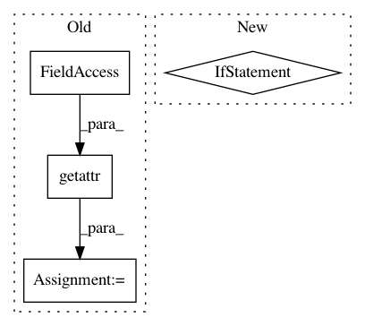

f2435e3ac209629cfd89ddbd94826f8cf0db9aa5,plotnine/geoms/annotation_stripes.py,_geom_stripes,draw_group,#,62
Before Change
if isinstance(coord, coord_flip):
axis, other_axis = other_axis, axis
breaks = getattr(panel_params, axis).breaks
range = getattr(panel_params, axis).range
other_range = getattr(panel_params, other_axis).range
// Breaks along the width
After Change
range = _axis.range
other_range = getattr(panel_params, other_axis).range
if fill_range == "auto":
if isinstance(_axis.scale, scale_discrete):
fill_range = "nocycle"
else:
fill_range = "cycle"
// Breaks along the width
n_stripes = len(breaks)
if n_stripes > 1:
diff = np.diff(breaks)
step = diff[0]
In pattern: SUPERPATTERN
Frequency: 4
Non-data size: 4
Instances
Project Name: has2k1/plotnine
Commit Name: f2435e3ac209629cfd89ddbd94826f8cf0db9aa5
Time: 2020-06-01
Author: has2k1@gmail.com
File Name: plotnine/geoms/annotation_stripes.py
Class Name: _geom_stripes
Method Name: draw_group
Project Name: fperazzi/proSR
Commit Name: 6fc77d75bdb46feffa39ad2c389def87643bdcf3
Time: 2018-08-08
Author: fperazzi@adobe.com
File Name: test.py
Class Name:
Method Name:
Project Name: rail-berkeley/softlearning
Commit Name: abb4e425ff57acad92d42e92a6c76526a3b49e27
Time: 2019-02-04
Author: hartikainen@berkeley.edu
File Name: softlearning/samplers/simple_sampler.py
Class Name: SimpleSampler
Method Name: sample
Project Name: jazzband/django-debug-toolbar
Commit Name: b66c950d4cb8672a924f9652224772d7219abbe2
Time: 2008-10-02
Author: rob@cogit8.org
File Name: debug_toolbar/middleware.py
Class Name: DebugToolbarMiddleware
Method Name: process_request